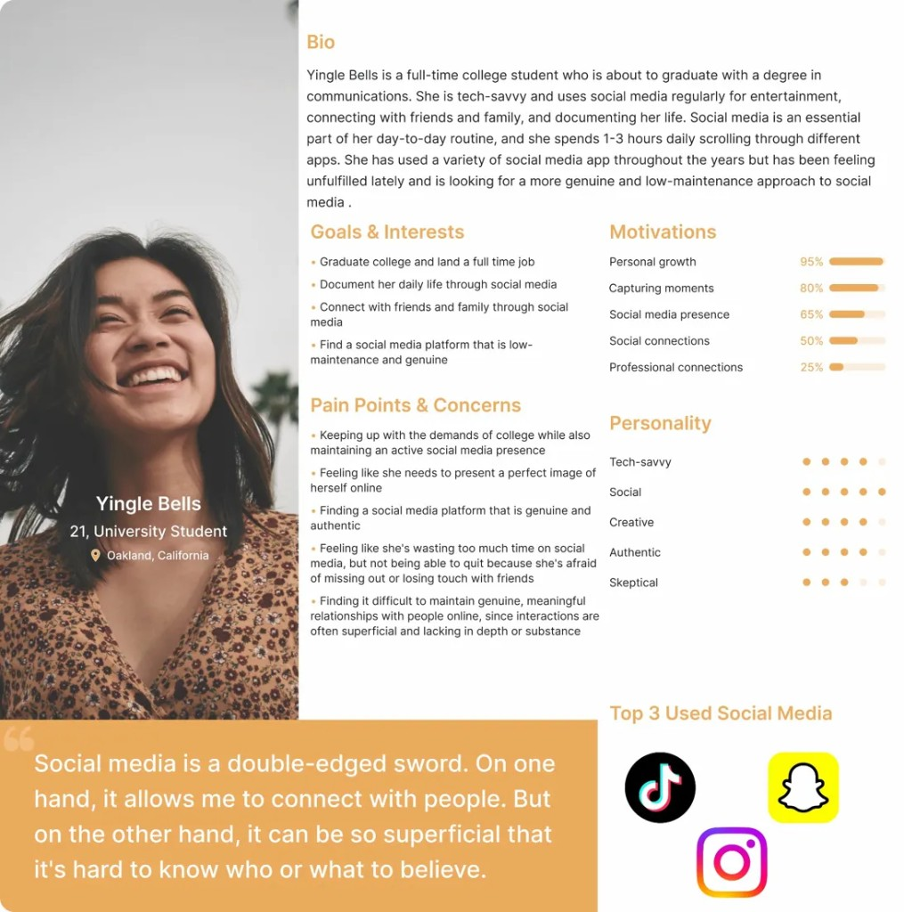
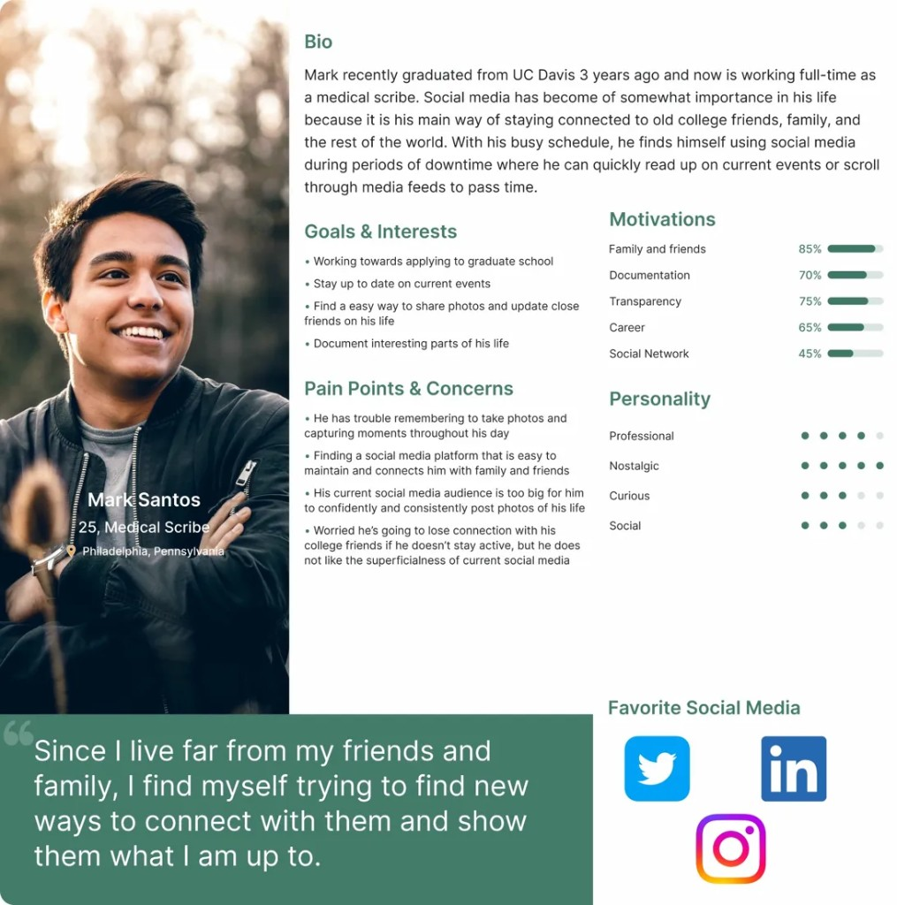
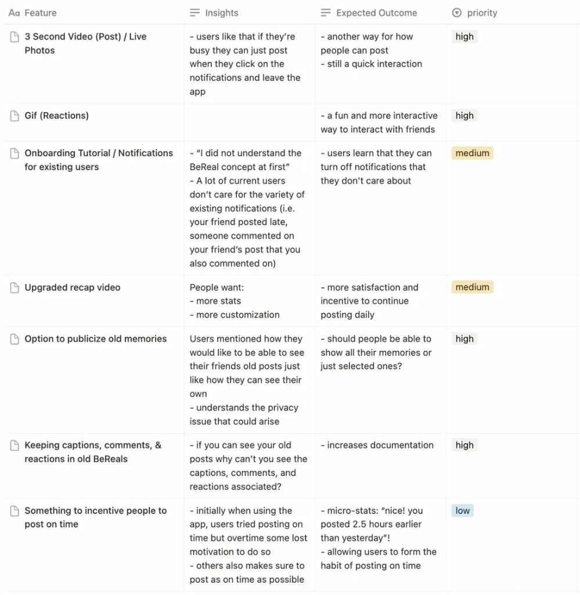

Context
BeReal's restrictions are intentional — one photo, limited time, no filters. That simplicity is its competitive advantage, but it also limits how long users stay and how deeply they engage. At the time, BeReal was losing daily active users to apps with richer social features.
Any new feature had to respect the core constraint: if it felt performative or polished, it was the wrong direction. The challenge was finding design space that deepened connection without becoming another Instagram.
How might we expand what users can do on BeReal without undermining the authenticity that makes it different?
Research
We combined six semi-structured interviews across high school, college, and working professionals with a 210-respondent survey. My teammate led the research plan; I co-conducted interviews, then took the lead on synthesizing findings into themes and translating them into opportunity areas for design.
86%
actively use BeReal
13%
rank it in their top 3 apps
3hr+
daily social media usage
The gap between usage and loyalty was the key insight: people use BeReal, but it doesn't compete for attention. It resonates emotionally but doesn't retain.
Connection
Users enjoy staying updated on close friends' everyday moments.
Simplicity
Minimal UI and limited posting feel refreshing vs content-heavy platforms.
Documentation
Looking back at past BeReals works as a lightweight personal archive.
Low stakes
The app feels safe because there's no pressure to perform or curate.
Personas

Yingle — Active User
Posts frequently but feels conflicted about time on social media. Wants genuine, low-maintenance expression.

Mark — Passive User
Uses BeReal to stay connected but rarely posts. Wants low-effort, non-disruptive engagement.
Feature Prioritization
We mapped feature ideas against user impact and effort. Three rose to the top — each extending expression or connection without adding performance pressure:

Why These Three
GIF Reactions
Addresses the biggest user pain point — limited ways to react to friends. A short looping GIF keeps reactions authentic and spontaneous, unlike curated emoji or text.
Public Memories
Gives users a reason to return outside the daily notification window. Letting people curate which BeReals stay on their profile extends engagement without adding performance pressure.
Friends' Memories
Serves the passive user who wants to stay connected but doesn't always post. Browsing a friend's public archive is a low-effort, high-warmth interaction.
Lo-Fi → Prototype
Lo-fi explored the concepts quickly. Mid-fi locked down layout and interaction logic. Hi-fi refined tone and visual clarity in context.

Final Design
Feature 01
GIF Reactions
React to friends' BeReals with a short looping GIF of yourself. Captures real-time energy — from clapping to cringing — without the pressure of a full post.


Feature 02
Public Memories
Choose which past BeReals to show on your profile. A look back that still feels casual and true to you — no highlight reel, just real moments you want to keep visible.
Feature 03
View Friends' Memories
See a friend's public BeReals in one place. Catch up on their life without needing a daily notification — perfect for the passive user.

Takeaway
What happened next
We didn't get to run usability tests, but the direction proved out on its own. BeReal has since shipped video reactions and the ability to pin Memories to your public profile — features directly aligned with what we proposed.
That external validation reinforced the approach: grounding concepts in research, not assumptions, leads to solutions that hold up — even when you can't test them yourself.
What I took away
Designing within constraints — respecting what an app deliberately chooses not to do — was the hardest part. It sharpened three skills I carry into every project: using research to narrow a wide opportunity space, making principled trade-offs when scope is limited, and presenting design rationale that connects features to user needs and business goals. Working closely with my teammate throughout — dividing research, pressure-testing each other's concepts, and aligning on a shared vision — reinforced how much stronger design gets when it's genuinely collaborative and research-driven.